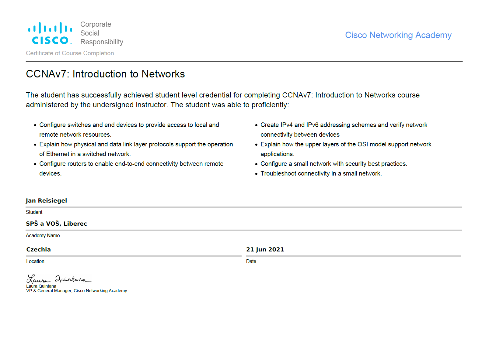
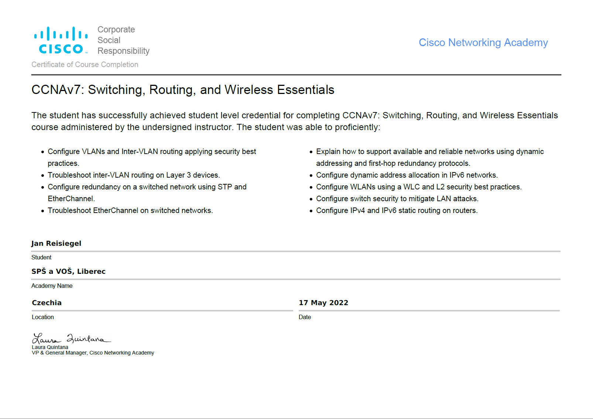

Tento web je vytvořen jako semestrální projekt pro předmět
Tvorba webových stránek na Technické
univerzitě v Liberci.
Web je zaměřen na historii a současnost Spojených států amerických a geologické éry Země.
V sekci USA naleznete informace o současném stavu USA, včetně
informací o prezidentovi, kongresu a senátu.
V sekci Historie naleznete informace o historii USA, včetně
informací o významných událostech a osobnostech.
V sekci Přihlásit se můžete přihlásit nebo zaregistrovat.
O mě
Kdo jsem?
Mé jméno je Jan Reisiegel. Studuji na Technické univerzitě v
Liberci v České republice. Rád programuji a hraji sporty.
Absolvoval jsem střední průmyslovou školu strojní a
elektrotechnickou v Liberci, se zaměřením na informační
technologie. Mám zájem o programování, chytré telefony, notebooky,
počítače a další. Ovládám programovací jazyky Java, JavaScript,
C#, C, C++ a další. Na mém GitHubu můžete prohlížet můj kód.
Mé certifikáty

Ve čtvrtém ročníku střední školy jsem obdržel certifikát za kurz CCNAv7:
Switching, Routing a Wireless Essentials. V roce předtím jsem získal
certifikát za kurz CCNAv7: Introduction to Networks. Oba kurzy jsou od společnosti CISCO.

Já a sport
Od roku 2012 do roku 2021 jsem aktivně hrával soutěžní volejbal v
TJ Slavia Liberec. Před pandemií COVID-19 jsem byl součástí
týmu,
který hrál v Extralize pro kadety, tedy v první juniorské lize.
V červnu 2023 jsem po jedné sezóně jako trenér úspěšně dokončil
trenérský kurz a obdržel trenérskou licenci třetí třídy. Nyní trénuji
dvě kategorie dívek ve spolupráci s mým otcem.
Video
Zde je ukázka vložení videa do html stránky. Video je poze použito jako příklad jak by mohlo být video vloženo.